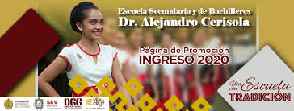
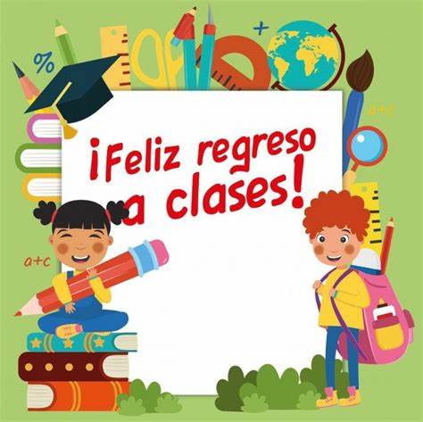
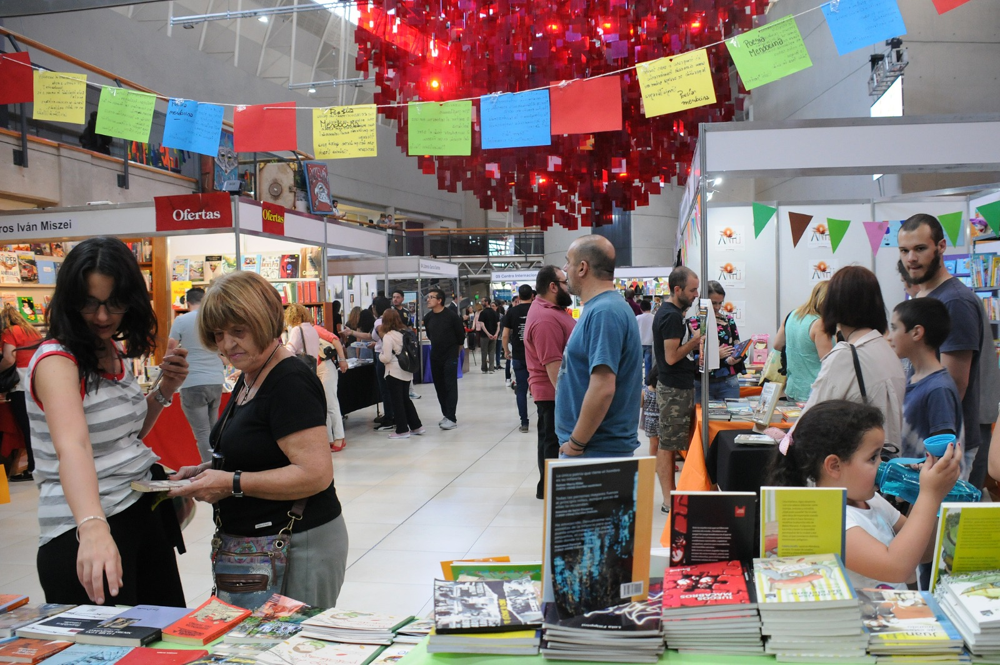
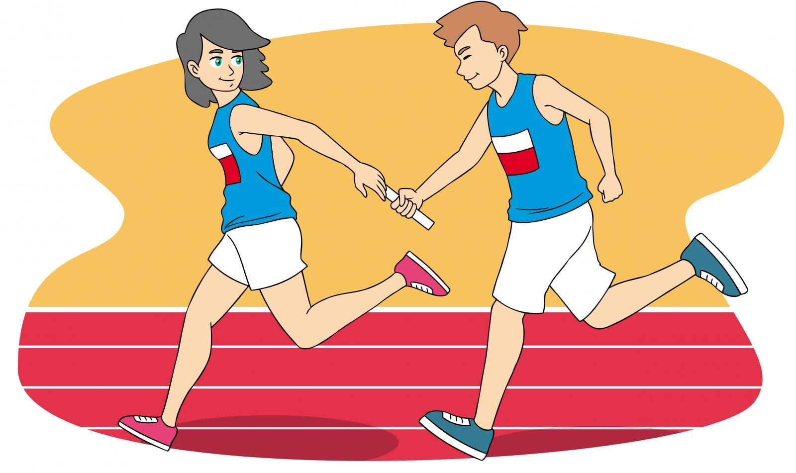

Bienvenidos
Conoce los eventos más importantes del año escolar. Aquí encontrarás fechas, descripciones y actividades destacadas.

La vida escolar es una experiencia que va mucho más allá del aprendizaje académico. Cada actividad, cada encuentro, cada celebración dentro de nuestra institución contribuye al desarrollo integral de los estudiantes, fortaleciendo valores como el respeto, la solidaridad, la creatividad y el trabajo en equipo. Este portal nace con el propósito de visibilizar todas esas experiencias que enriquecen nuestro calendario escolar.
A lo largo del ciclo escolar, organizamos una serie de eventos que permiten a nuestros alumnos crecer en diferentes áreas: académica, artística, cultural y deportiva. Desde la bienvenida al nuevo ciclo hasta el cierre conmemorativo del año, cada actividad tiene un objetivo pedagógico claro y se realiza con el compromiso de todo nuestro equipo docente, administrativo y directivo.
En este espacio encontrarás información actualizada sobre los eventos escolares más importantes, como el inicio de clases, entrega de boletas, jornadas de evaluación, ferias, competencias, actos cívicos y actividades recreativas. Además, podrás consultar fechas, descripciones, recomendaciones y detalles importantes para preparar tu participación o la de tus hijos.
Invitamos a las familias, docentes y estudiantes a involucrarse activamente en cada evento. Su presencia y entusiasmo son fundamentales para crear una comunidad educativa unida, dinámica y comprometida. Cada actividad es una oportunidad para convivir, aprender de manera significativa y fortalecer los lazos que nos unen como institución.
Agradecemos su interés y los animamos a estar atentos a cada actualización. Juntos, sigamos construyendo una escuela donde se formen no solo grandes estudiantes, sino también grandes personas.
Eventos Escolares
| Evento |
Descripción |
Fecha |
| Inicio de Clases |
Bienvenida a estudiantes y entrega de horarios. |
15 de agosto |
| Entrega de Boletas |
Revisión de calificaciones con padres. |
30 de septiembre |
| Semana de Exámenes |
Evaluación bimestral de todas las materias. |
Del 10 al 14 de octubre |
📚 Inicio de Clases
Fecha: 15 de agosto
Después del receso escolar, damos la bienvenida a todos los estudiantes al nuevo ciclo lectivo. Durante esta jornada se realizará la presentación del personal docente, se entregarán los horarios de clase y se ofrecerá una breve inducción sobre las normas y dinámicas escolares. Es un día clave para integrarse, conocer a los compañeros y comenzar con entusiasmo.

📝 Entrega de Boletas
Fecha: 30 de septiembre
Un espacio importante para fortalecer la comunicación entre la escuela y las familias. Los padres de familia podrán revisar el desempeño académico de sus hijos, dialogar con los docentes sobre avances y oportunidades de mejora, y recibir orientación sobre cómo acompañar el proceso educativo desde casa.
🧠 Semana de Exámenes
Fecha: Del 10 al 14 de octubre
Durante esta semana se realizarán las evaluaciones bimestrales de todas las asignaturas. Es una oportunidad para que los estudiantes demuestren sus aprendizajes y refuercen su responsabilidad académica. Se recomienda organizar un plan de estudio, descansar adecuadamente y acudir puntualmente a todas las sesiones.
Eventos Culturales
| Actividad |
Descripción |
Fecha |
| Feria del Libro |
Exposición de editoriales y lectura en voz alta. |
5 de septiembre |
| Día de la Independencia |
Desfile y actividades artísticas. |
16 de septiembre |
| Festival de Talentos |
Presentaciones musicales, danza y teatro. |
21 de octubre |
📖 Feria del Libro
Fecha: 5 de septiembre
Una jornada dedicada a fomentar el amor por la lectura. Contaremos con la participación de editoriales locales, presentaciones de autores invitados y actividades como lectura en voz alta, cuentacuentos y talleres literarios. ¡Ideal para descubrir nuevos libros y compartir historias!

🇲🇽 Día de la Independencia
Fecha: 16 de septiembre
Conmemoramos la independencia de México con un desfile escolar lleno de color, música y orgullo nacional. Los estudiantes participarán en representaciones artísticas, bailes folclóricos y declamaciones que destacan nuestra historia y tradiciones patrias.
🎭 Festival de Talentos
Fecha: 21 de octubre
Una tarde donde nuestros estudiantes brillan en el escenario mostrando sus habilidades en música, danza, teatro y otras expresiones artísticas. Un evento lleno de creatividad, pasión y aplausos para celebrar el talento de nuestra comunidad escolar.
Eventos Deportivos
| Competencia |
Descripción |
Fecha |
| Torneo de Futbol |
Intergrados entre grados. Trofeo y medallas. |
3 de noviembre |
| Olimpiada Escolar |
Atletismo, natación y más. |
10 de noviembre |
| Carrera de Relevos |
Equipos por grupo compiten en velocidad y estrategia. |
17 de noviembre |
Detalles de los Eventos Deportivos
⚽ Torneo de Fútbol
Fecha: 3 de noviembre
Una de las competencias más esperadas del año, donde equipos representando cada grado se enfrentan en partidos llenos de emoción, trabajo en equipo y espíritu deportivo. Al final del torneo, se entregarán trofeos y medallas a los ganadores.
🏅 Olimpiada Escolar
Fecha: 10 de noviembre
Una jornada deportiva integral que incluye pruebas de atletismo, natación, salto, entre otras disciplinas. Es el momento ideal para que los estudiantes demuestren su esfuerzo, destrezas físicas y compromiso con el deporte.
🏃♂️ Carrera de Relevos
Fecha: 17 de noviembre
Actividad por equipos donde se combina la velocidad, la estrategia y el trabajo conjunto. Cada grupo competirá por ser el más rápido en esta prueba de coordinación y agilidad. ¡Un evento vibrante para cerrar la temporada deportiva!
